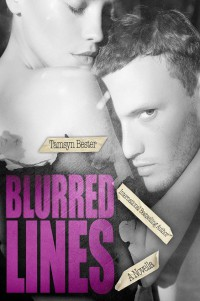
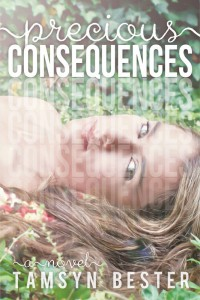

There’s a fine line between love and hate, so fine that you don’t know you’ve lost balance until it’s too late.
I’m not sure exactly when I lost my balance, all I know is that he was to blame.
Dane Winters.
The boy who’d spent most of his life hating me for reasons I never understood.

Jade Matthews and Reid Cole have been best friends all their lives. He was the boy who chased away the monsters from under her bed, and she was the girl he knew he was going to spend the rest of his life with.
But even friendships aren’t always built to last.
Kadence Kavanagh has spent the last two years trying to rebuild her life. When a job opportunity presents itself, she can’t say no, even if it’s with the man who’s life was ruined by her father’s indiscretion. It’s been years since she last saw Caleb Callahan, and she’s not even sure he remembers her, but she’s determined to give herself a clean slate no matter who she has to work for.
I only know who I was before, and when remembering proved to be too much, I moved on and started over.
And then the dreams started.
Vivid, and bold, filled with a face I didn’t know.
But he was always there.
In my head. In my heart.
And when I decided to put pen to paper, I found him whispering, “Come back to me.”
On the outside, Huntley Morgan is your typical girl-next-door, with her long blonde hair and piercing blue eyes, and that’s exactly what she wants people to see. Her name exposes her to the demons of her past but remembering her reason for moving across the country to start over is what keeps her alive.

I willingly accepted those consequences and wrote a new plan for my life. But that plan didn’t include Cameron Argent – the sexy-as-sin tattooed playboy who got under my skin the moment I laid eyes on him. I was headed down a dark and dangerous road where he was concerned and in the end, our relationship was inevitable.
When Cassey Emerson graduated high school 3 years ago, she packed her bags and left the dusty trailer park she called home in the rear view mirror. Since then, she has worked hard to give herself the life, and career, that she always dreamed of. As the Publishing Assistant at Knight Media, her dreams are slowly but surely coming true…
One year ago, Brody Scott made the biggest mistake of his life and has lived with his regret every day since then…
One year ago, Demetria ‘Demi’ Rosemead watched the love of her life turn his back on her, leaving her to face one of the hardest things she’s ever had to go through on her own.